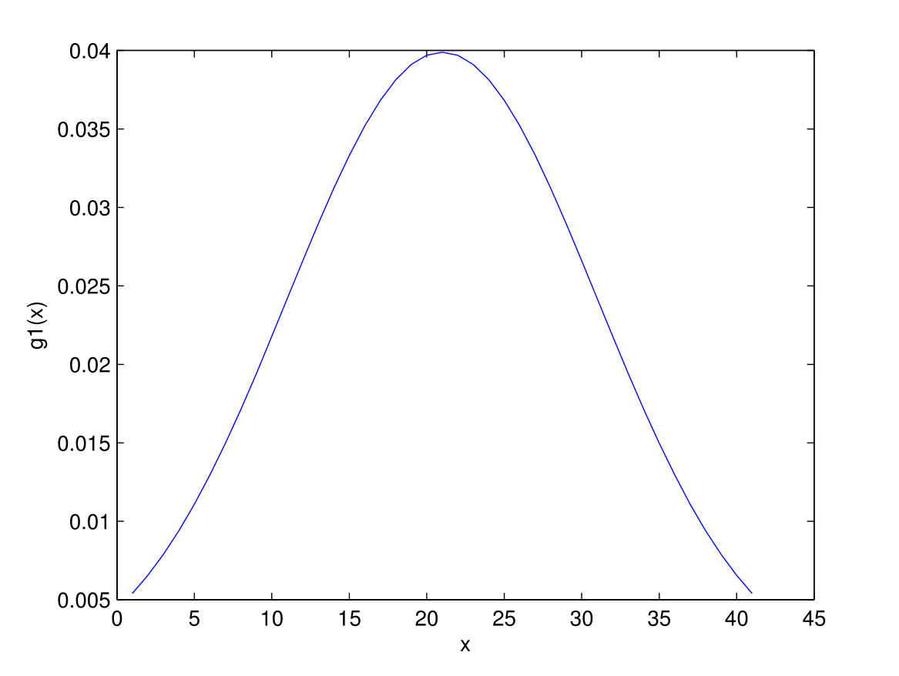
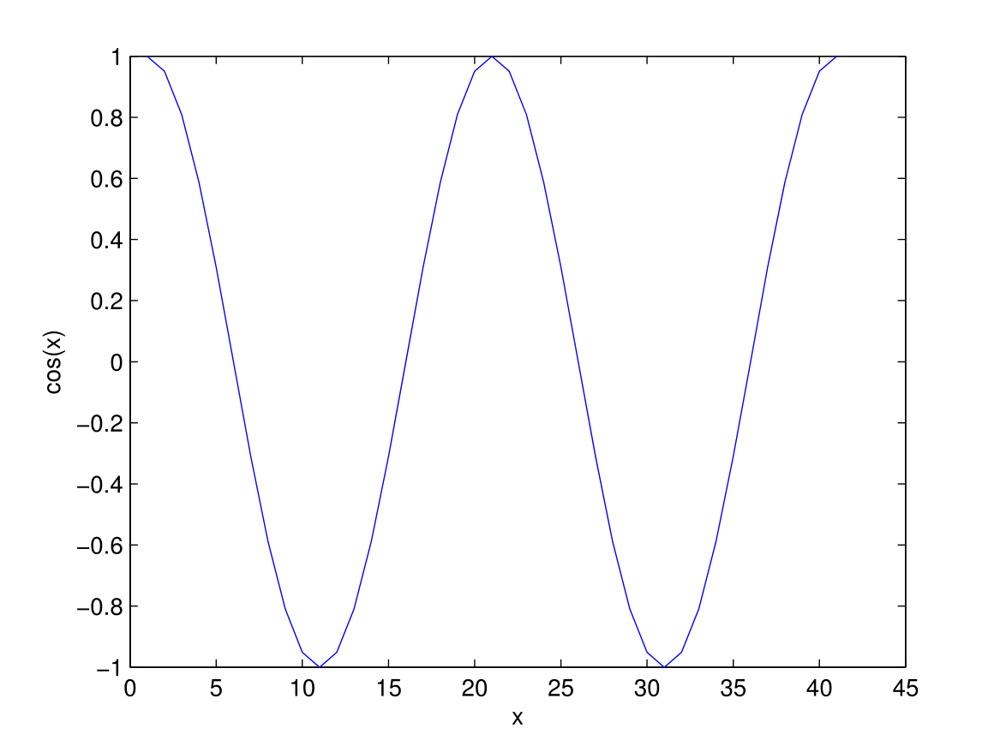
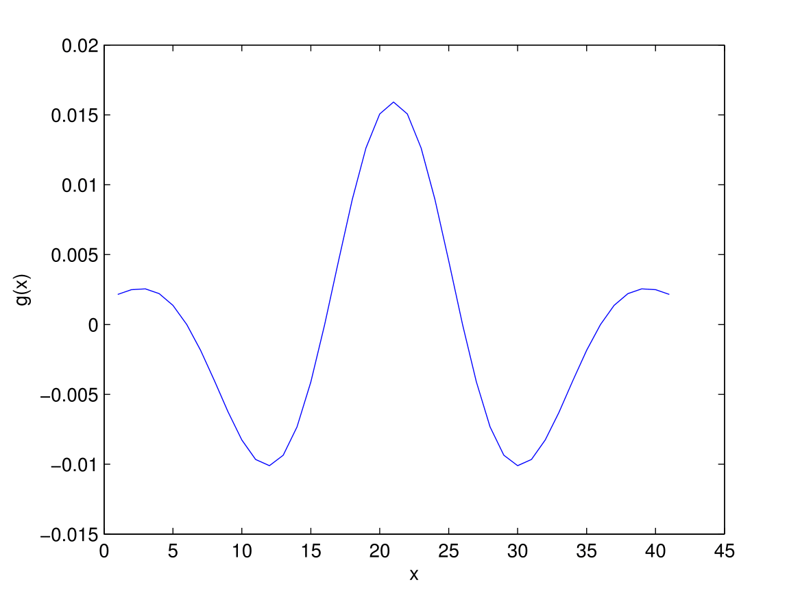
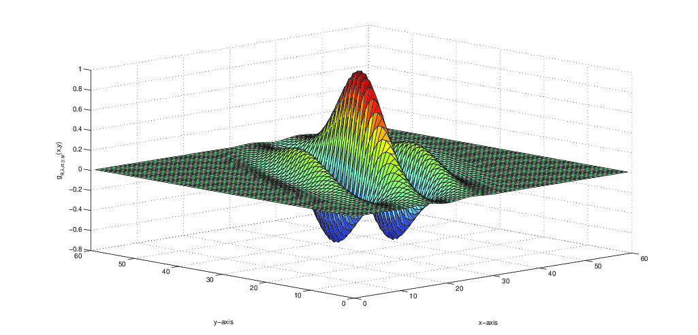
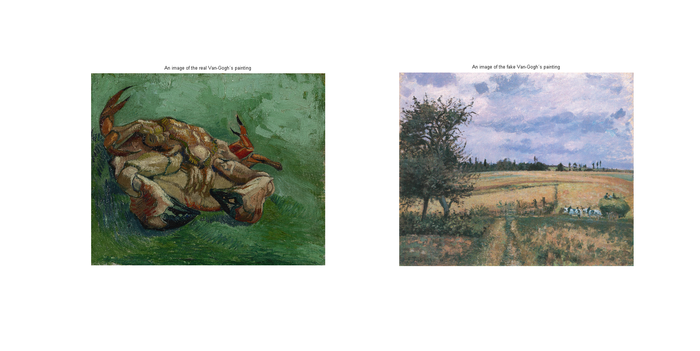
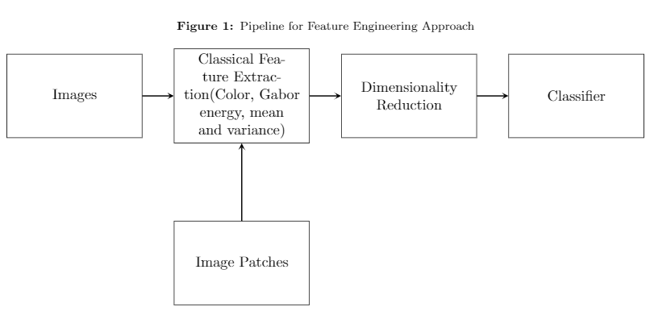
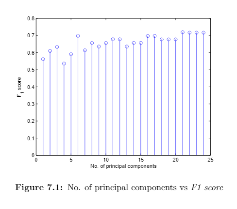

OVERVIEW of FORGERY DETECTION OF VAN GOGH'S PAINTING USING THE GABOR FILTER BANK
In this section, we will discuss about :
1-D Gabor Filter Function
Mathematically, Gabor function is a composite form of a Gaussian kernel and a sinusoidal wave.
For 1-D signal $x$, Gabor function is:
- 2-D Gabor Filter Function A symmetrical Gabor filter can be defined as, \begin{equation}\label{eqn2} g_\lambda,_\theta,_\gamma,_\sigma,_\psi(x,y)=\exp\bigg(-\frac{x'^2+\gamma^2 y'^2}{2\sigma^2}\bigg)\cos\bigg(2\pi\frac{x'}{\lambda}+\psi\bigg); \end{equation} where, $$x'=x\cos\theta+y\sin\theta ;$$ $$y'=y\cos\theta-x\sin\theta.$$ where $\big(x,y)$ is the coordinate system in the spatial domain, the parameter $\sigma$ is the standard deviation of the Gaussian envelope, $\psi$ is the phase offset of the cosine, $\theta$ is the orientation, $\gamma$ is the aspect ratio, $\lambda$ is the wavelength of the sinusoidal wave. A 2-D Gabor filter is shown in figure
- Gabor filter bank By varying the parameters of the 2-D gabor filter function, gabor filters of different can be obtained. The collection of those obtained filters is reffered as filter bank.
-
Forgery detection of Van Gogh's painting using the gabor filter bank
There is two paintings from van gogh's are shown, the left one is the real painting of him, and
right one is the fake painting. vgdb_2016 (download here)
containts the images of real and fake van gogh's paintings.
\begin{equation} \label{eqn1}
\begin{split}
g(x) &=\frac{1}{\sqrt{2\pi\sigma^2}}\exp\bigg(\frac{-x^2}{2\sigma^2}\bigg)\cos(2\pi\omega x);\\
& =g_1(x)\cos(2\pi\omega x).
\end{split}
\end{equation}
where $g_1(x)$ is the Gaussian kernel , $\omega$ is the center frequency, i.e., the frequency
at which the filter has largest response and $\sigma$ is the spread of Gaussian kernel.
Graphical illustration:
Graphical illustration of 1-D Gabor function (c) is the composite form of figure (a) and figure (b)




Wavelength, $\lambda = 30, 35, 40, 45;$
Orientation, $\theta = 0, \frac{\pi}{6}, \frac{2\pi}{6}, \frac{3\pi}{6}, \frac{4\pi}{6}, \frac{5\pi}{6};$
Standard deviation, $\sigma = 0.56\times \lambda; $
Aspect-ratio, $\gamma = 0.5;$
Phase-offset, $\psi = 0.0;$


Workflow
This work is inspired by the IEEE magazineC. Richard Johnson, Jr., Ella Hendriks, Igor J. Berezhnoy, Eugene Brevdo, Shannon M. Hughes, Ingrid Daubechies, Jia Li, Eric Postma, and James Z. Wang, "Image processing for artist identification,"
The workflow is shown in the figure below:

Convolution and energy:: Features extraction
The result of filtering an image with a Gabor wavelet is obtained by 2-D convolutional operation. If $I(x,y)$ represents image, $ G(x,y,\theta,\lambda)$ represents filter response (here $G(x,y,\theta,\lambda,\sigma,\psi,\gamma)$ depends on Gabor parameters $\theta$ and $\lambda$ because we are varying the values of $\lambda$ and $\theta$ and keeping others parameters fixed) then, \begin{equation}\label{eqn3} G(x,y,\theta,\lambda)=\int\int I(p,q)g(x-p,y-q)dpdq ; \end{equation} An image is sequentially filtered with a set of Gabor filters for different values of orientations and wavelengths. Each resulting Gabor energy is taken as an feature for each and every filter. Gabor energy is defined as the squared root of filtered pixel values.Performance
$f_1$ Score is a good measure to evaluate the performance of a clasification model.True Positives (TP) = number of samples from the positive class classified correctly as the positive class
False Negatives (FN) = number of samples belonging to positive class misclassified as the negative class.
False Positives (FP) = number of samples belonging to negative class misclassified as the positive class.
True Negatives (TN) = number of samples belonging to the negative class correctly classified as the negative class.
\begin{equation} Precision = \frac{TP}{TP + FP} \end{equation} \begin{equation} Recall = \frac{TP}{TP + FN} \end{equation} $F_1$ score is the harmonic mean of Precision and Recall given by,
\begin{equation} F = \frac{2 . Precision . Recall}{(Precision + Recall)} \label{f1} \end{equation}

Figure shows the $f_1$ score for keeping different principal components. To learn more about the
Principal compoents see Page PCA explanation